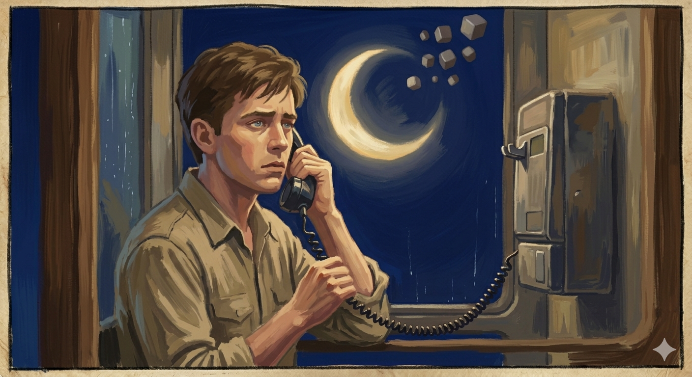
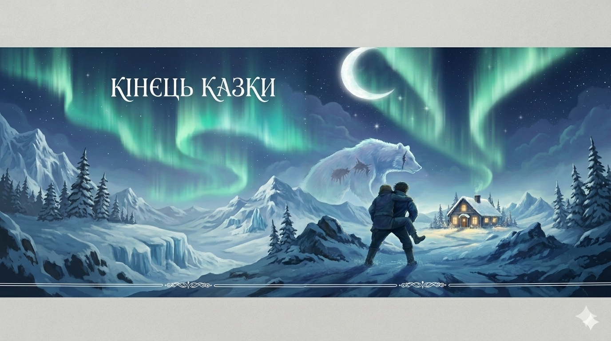
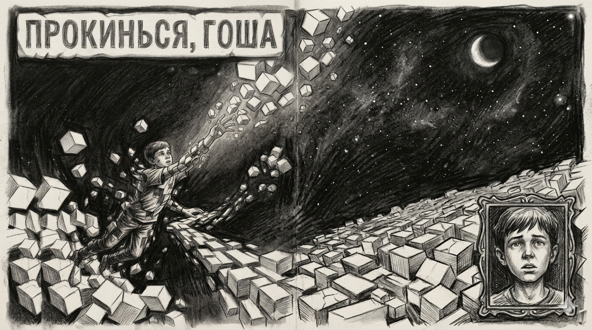

Твори Данила
Крупинського
Три оповідання · Українською
Оберіть твір для читання



Дурні думки
Розділ 1. Тяжке дитинство Миколи
Микола народився 1984 року в Києві. У нього була велика любляча родина: батько Михайло, мати Єлизавета, дідусі та бабусі. У три роки хлопчик пішов до садочка. Він був старанною та слухняною дитиною, тому вихователі ставилися до нього з особливим теплом, як до рідного.
Проте все змінилося у школі. Із шести років Миколка став об'єктом насмішок. Єдиною опорою для нього був кращий друг Ярослав, який завжди підтримував у скрутні хвилини.
Одного разу, коли Миколі було десять, він повернувся додому в жахливому стані: одяг роздертий, сам закривавлений і побитий. Хлопець був у такому розпачі, що йому здавалося — це кінець. Коли мати повернулася з роботи, вона побачила сина та його старий портфель, з яким він ходив уже сім років — брудний і пошматований.
— З тобою все добре? — злякано запитала мати.
— Так... — прошепотів Микола.
— Подивися на себе! Ти весь у синцях! Розказуй негайно, що сталося!
Микола не витримав і розплакався. Він розповів, як однокласники викинули його речі, розтрощили термос і коробку для їжі, а його самого жорстоко побили.
— І ти все це стерпів? — суворо запитала мати.
— Т-так... — тремтячим голосом відповів син.
— Значить так: підеш на секцію самооборони. Навчишся стояти за себе, — холодно відрізала вона.
— Але ма...
— Ніяких «але»! Я не хочу бачити тебе слабким. Це моє останнє слово.
— Добре, мамо. Я буду пахати.
— От і славно. Сподіваюся, скарг на тебе не буде.
Микола розумів, що попереду ще мінімум пів року знущань, поки він не зміцніє. Весь цей час він ховався на перервах у кабінеті класної керівнички. Вона заспокоювала його і стала для нього майже другою мамою.
Розділ 2. Втрата
Коли Миколі минало тринадцять, у його життя прийшла велика біда. Спочатку помер дідусь Богдан, а за місяць за ним пішла і бабуся Лілія. Хлопчина не міг збагнути: як це сталося? Чому всі дорогі йому люди зникають? Мати намагалася пояснити, що тепер вони на небесах і зустріч можлива лише там.
— Мамо, а як туди потрапити? Я хочу на небеса! — раптом вигукнув Микола. — Мамо, чому ти мовчиш?
У матері пересохло в горлі від болю. Вона ледь чутно промовила:
— Подзвони батькові. Скажи йому код: 438594.
Микола слухняно передав батькові цифри по телефону. Вже за пів хвилини до будинку під'їхала машина. З неї вибігли восьмеро чоловіків у масках. Микола злякався, але мати наказала відчинити двері. Їх швидко забрали і повезли до батька в іншу країну. Виявилося, що батько працював на секретній службі. Там, у безпеці, батько пояснив, що з мамою все буде добре. Того вечора вони вперше за довгий час гуляли парком усі разом.
Розділ 3. Доросле життя
Миколі виповнилося тридцять два. Через постійні знущання у школі він не зміг добре вчитися і не вступив до університету своєї мрії. Проте він завжди обожнював техніку. Микола став водієм-далекобійником. Він об'їздив усю Європу та Азію, заробляючи чималі гроші — по сто тисяч за рейс.
Він мав люблячу дружину Віку, яка саме чекала дитину. Сина вирішили назвати Ярославом — на честь того самого вірного шкільного друга. Коли малюк народився, він був незвичайним: важив 3,6 кг, майже не плакав і завжди тримав кулачки стиснутими. Він дивився на батьків зі спокоєм удава.
— Він дуже розумний, наш малюк, — усміхалася Віка.
— Авжеж, Вікуся, — відповідав Микола.
— Тобі треба їхати в рейс, щоб отримати зарплату на потреби сина.
— Все для малюка! — Микола ніжно поцілував дружину та сина і вирушив у дорогу.
Кожного разу після зміни він дзвонив додому. Віка завжди відповідала. Але одного дня слухавку ніхто не підняв.
Розділ 4. Дурні думки
Микола дзвонив знову і знову. Три довгі гудки — і автовідповідач: «Абонент поза зоною досяжності». У голову почали лізти жахливі думки: «Пограбували? Викрали? Вбили?».
— Ні, треба їхати! — холодно сказав він собі. — Я вмію за себе постояти.
Він востаннє набрав номер. Серце калатало в такт гудкам. Знову тиша. Микола завів фургон і помчав до бази. На базі начальник видав йому зарплату — 140 тисяч.
— Жінка — це святе, — сказав начальник. — Їдь додому, ти молодий, сім'я головніше за роботу. Візьми ще сто тисяч від мене. Вступиш до університету, куди хотів. Я ціную твою працю. Бувай.
Микола подякував, застрибнув у кабіну і натиснув на газ. Він їхав три дні і дві ночі без зупинок, не збавляючи швидкості, ігноруючи втому та голод. У голові пульсувало лише одне: «Тільки б вони були живі».
Розділ 5. Київ
Рідний Київ зустрів його знайомими вулицями.
— Київ... рідний мій Київ... — шепотів Микола, коли до дому залишалося останніх десять кілометрів. Він не їв і не пив увесь цей час, єдине, чого він хотів — побачити Віку та маленького Ярика.
Розділ 6. Дім, рідний дім...
Микола під'їхав до під'їзду. Піднімаючись сходами до тринадцятої квартири, він раптом відчув знайомий аромат — пахло свіжоспеченими пиріжками. Він тричі постукав у двері.
Замок клацнув, і на порозі з'явилася Віка з Ярославом на руках.
— Люба моя! Я так за вами скучив! Чому ти не відповідала?
— Ой, Колю, телефон зламався, а я якраз пиріжки пекла, — усміхнулася вона. — Ти зовсім виснажений. Сідай за стіл, якраз усе гаряче.
Микола сів на кухні, обійняв своїх рідних і відчув неймовірне полегшення.
— Знаєш, — сказав він, дивлячись на сина, — я найму репетиторів і таки вступлю до університету. Оберу таку професію, щоб більше ніколи не залишати вас самих.
Дитинство і перший злам
Микола виріс у Києві в люблячій родині. У школі його жорстоко цькували — мати відправила на самооборону, і він навчився боротися. У 13 років один за одним пішли з життя дідусь і бабуся. Хлопець відчайдушно запитав про небеса — і батько-агент терміново вивіз усю сім'ю в безпечне місце.
Доросле щастя і раптова тиша
У 32 роки Микола — далекобійник, що об'їздив Європу та Азію. Одружений з Вікою, яка народила сина Ярослава. Виїхавши в рейс, Микола перестає додзвонюватися до дружини — і серце стискається від страху. Телефон мовчить день за днем.
Три доби без сну і голоду
Начальник відпускає Миколу і дає додаткові гроші зі словами: «Сім'я — святе». Микола мчить до Києва три дні і дві ночі без зупинок, не їсть і не п'є. Єдина думка — щоб рідні були живі.
Пиріжки і полегшення
Вдома пахне свіжоспеченими пиріжками. Віка відчиняє двері з сином на руках — телефон просто зламався. Усі живі. Микола вирішує вступити до університету, щоб більше не залишати родину.
Кінець казки
Це була Антарктида — суворий край, де крижаний вітер гуляє безлюдними пустелями. Саме тут полювали двоє вірних друзів — Білл та Джон. Однієї ночі, коли над засніженим краєм зійшов місяць, а небо засіяли холодні зорі, сталося непоправне.
Білл прокинувся від того, що Джон подав йому відчайдушний сигнал небезпеки азбукою Морзе. Вибігши з намету, Білл побачив жахливу картину: величезний ведмідь шматував його товариша. Не гаючи ні секунди, мисливець схопив рушницю. Пролунав постріл — звір упав замертво, але в останньому пориві встиг поранити Білла в руку.
Стан Джона був критичним: він втратив одну ногу, а інша була понівечена глибокими ранами. Білл оперативно дістав аптечку, продезінфікував рани та перев'язав друга бинтами, щоб зупинити кров. Попри власну хронічну хворобу колін, через яку кожен крок завдавав неймовірного фізичного болю, Білл зціпив зуби. «Я маю донести його і врятувати», — повторював він собі.
Дорога була тяжкою. Від перевтоми Біллу ввижалися дивні речі: наче гарний кіт грається з клубком ниток. Одного разу шлях їм перегородив вовк зі шрамом на морді — той самий, якого вони прогнали місяць тому. Голодний звір готувався до нападу, але Білл виявився швидшим.
Нарешті попереду з'явився будинок на вулиці Лісовій. Це був дім Данила, брата Білла. Побачивши брата з пораненим на плечах, Данило миттєво кинувся до стаціонарного телефона — у ті сімдесяті роки це був єдиний зв'язок. Невдовзі приїхала швидка. «Живи, козаче, живи!» — молився Білл, дивлячись услід автівці.
Минув місяць. У лікарняній палаті Джон нарешті прийшов до тями.
— Якою ціною, Білле?.. — прошепотів він.
Джон розповів, що трагедія сталася через його цікавість: він знайшов ведмежа і почав з ним гратися, не помітивши, як підійшли дорослі ведмеді. Попри зусилля лікарів, сили залишали Джона. Перед смертю він встиг прошепотіти головне:
— Ти герой... Дякую, що допоміг мені дожити до цієї розмови. Ніколи не здавайся. Ніколи...
Пройшов рік. Білл одружився з Марією, яку ніжно називає своєю Мрією. Але кожного разу, згадуючи друга, він чує його голос: «Ніколи не здавайся, друже. Бери з мене приклад».
Антарктида. Ведмідь. Вистріл.
Двоє мисливців — Білл і Джон — полюють в Антарктиді серед снігів і темряви. Вночі Джон подає сигнал SOS азбукою Морзе: на нього напав величезний полярний ведмідь. Білл застрелив звіра і врятував друга, але той втратив ногу. Причина трагедії: Джон грався з ведмежам і не помітив, як підійшла мати.
Крізь біль і виснаження
Білл несе важкопораненого Джона на плечах крізь снігову пустелю. Його власні хворі коліна кричать від болю при кожному кроці. По дорозі він долає вовка зі шрамом і бореться з галюцинаціями від виснаження. Нарешті добирається до брата Данила — той негайно викликає швидку.
Останні слова і заповіт
Через місяць Джон приходить до тями в лікарняній палаті, але сили залишають його. Перед смертю він дякує Біллу і залишає заповіт: «Ніколи не здавайся». Білл одружується з Марією і живе далі — зі словами загиблого друга як внутрішнім компасом.
Прокинься, Гоша
Розділ 1. Немов реальність, але...
Мені було близько дванадцяти-тринадцяти років, коли все це розпочалося. Зі мною почало відбуватися щось дивне: я часто спав, мене трусило через дрібниці. Коли до мене підходили друзі, щоб привітатися чи запитати, як справи, ми починали розмову, і тривога минала. Але це тривало лише годину.
Щодня я ходив на огляд до психолога. Лікар казав, що в мене все добре, але батьки наполягали, щоб я продовжував сеанси. Я ніколи не любив своє ім'я — Григорій. Хотілося плакати через нього, але батьки пояснювали: це церковне ім'я, у тебе буде ангел-охоронець, який тебе оберігатиме.
Я вірив у це. Щонеділі ходив до церкви, любив навчатися і мріяв стати хірургом. Найбільше мені подобалися біологія, історія та математика. Я був старанним учнем: отримував переважно «5», рідко «4», і ніколи не мав «3» чи «2». Вчителі хвалили мене і ставили у приклад іншим, проте іноді сварили за поведінку та зайві емоції.
Розділ 2. Початок жахіття
Ми святкували Новий рік. Мені вже виповнилося тринадцять, і я вирішив того дня не йти до психолога. Це і започаткувало все подальше жахіття.
На святі були батьки, їхні знайомі та мій молодший брат Микола, якому тоді було лише сім років. Усе починалося добре: ми їли піцу, дорослі пили горілку, а я — зелений чай. Раптом у мене почалися галюцинації: я бачив тексти, чув голоси, мене трусило. Я готовий був кричати, але розумів, що батьки не повірять і нічим не допоможуть.
Я прокинувся у лікарні. Мені сказали, що я пробув там чотири роки. Коли я вийшов звідти, мені було вже сімнадцять. Тільки батьки знали, що насправді зі мною відбувалося і чому я став таким відстороненим від світу.
Розділ 3. Шлях до мрії через біль
Минув рік. Я закінчив школу, хоча через хворобу часто пропускав заняття. Я пив таблетки — лікар казав, що у мене в мозку є пухлина або «бетон», який заважає нормально жити, тому ці ліки необхідні. Це було важко, але я був упевнений, що вступлю до університету.
Коли настав час вступу, я дуже нервував. Залишалося лише сорок хвилин до іспиту. Я зробив тест і отримав результат — 20 балів з 25. Я був у нестямі від радості! Але коли прийшов додому і розповів бабусі Тетяні, вона лише холодно глянула на мене. Моя радість миттєво зникла.
Бабуся почала кричати: «Навіщо це мені? Навіщо ці твої успіхи?». Вона не вірила в мене, сміялася з моїх зусиль. Я розплакався і побіг до своєї кімнати. Я чув, як вона продовжувала сваритися з мамою. Тієї ночі я зрозумів: що б я не робив, деякі люди ніколи не будуть за мене радіти. Пройшли роки, бабуся померла, але я так і не забув той випадок.
Розділ 4. Доктор Смайл
Я став хорошим хірургом. Оперував і став відомим на весь світ. Моя найскладніша операція отримала назву «Доктор Смайл».
Якось до мене привезли пацієнта, якому потрібно було терміново вирізати апендицит. Усі колеги казали, що потрібні додаткові обстеження, але я діяв швидко — взяв скальпель і розпочав роботу. Всі хірурги були вражені моєю майстерністю та впевненістю.
Ви, напевно, запитаєте: чому мене так звали? Я й сам не знаю до кінця. Можливо, через мою посмішку, яка ніколи не зникала з обличчя, що б не відбувалося навколо.
Розділ 5. Це була не реальність...
Одного разу мама прийшла до мене в кабінет. Я подивився на неї і сказав:
— Мамо... це не реальність! Я живу не...
Я не встиг договорити. Усе навколо почало зникати. Світло згасло.
Розділ 6. Кінець...?
Я прокинувся у своїй кімнаті. Там була мама. Вона міцно обійняла мене. Мені було дуже погано, я плакав і крізь сльози казав:
— Мамо, я так сильно тебе люблю... Не йди від мене.
Уся та реальність — кар'єра хірурга, успіх, університет — була лише сном. Я просто катався на велосипеді зі своєю сім'єю, впав і втратив свідомість. Я довів собі лише одне: я втратив усе, що мав у тому сні, але зберіг головне — справжню любов і життя. Я прожив довге і щасливе життя.
Дивна хвороба і чотири втрачені роки
Григорій — старанний відмінник, мріє стати хірургом. З 12 років відвідує психолога через тривогу і дивні стани. На Новий рік у 13 пропустив сеанс — і почалися галюцинації, голоси, неконтрольована тряска. Прокинувся в лікарні через чотири роки, вже у 17. Батьки знали правду — і мовчали.
Перемога і байдужість рідних
Закінчив школу попри хворобу і щоденні таблетки. Склав вступний тест на 20 з 25 — величезна особиста перемога. Але бабуся Тетяна лише кричить: «Навіщо це мені?». Гоша розуміє гірку істину: деякі люди ніколи не радітимуть за тебе — і треба жити попри це.
Доктор Смайл і момент істини
У своєму сні Гоша став всесвітньо відомим хірургом — «Доктором Смайлом». Але одного дня до кабінету зайшла мама — і він раптом усвідомив, що все навколо ненастправжнє. Не встиг договорити — світло згасло.
Прокинувся. Живий. Любимий.
Гоша просто впав з велосипеда під час прогулянки з сім'єю і втратив свідомість. Уся блискуча кар'єра хірурга — лише сон. Мама поряд і міцно обіймає. Він прожив довге щасливе життя зі справжньою любов'ю.